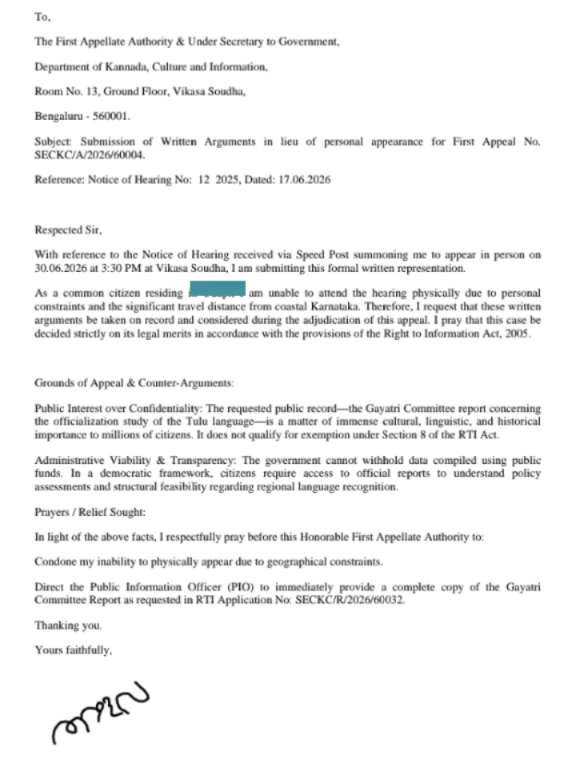
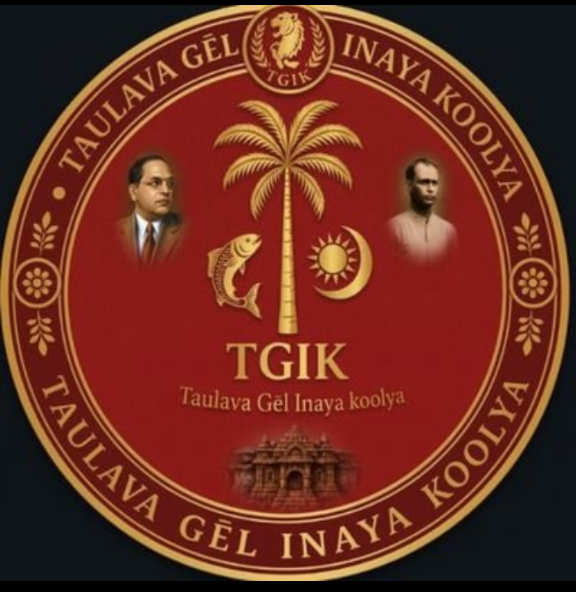

BENGALURU: The institutional struggle for the official status of the Tulu language has scaled the highest walls of state governance. Yesterday, June 30, 2026, the Taulava Gēl Inaya Koolya (TGIK) transitioned public interest research into an aggressive institutional offensive, dispatching a comprehensive legislative representation directly to the floor of the Vidhana Sabha.
This action comes as the pressure mounts: it has been exactly 116 days since the Gayatri Committee Report was formally submitted to the state government. Despite the passage of nearly four months, the findings remain shrouded in bureaucratic delay.
Official Legislative Submission:

By bypassing traditional administrative hurdles, TGIK has placed the state's highest decision-makers on notice. The campaign demands that the case be evaluated strictly on its unyielding legal merits under the Right to Information Act, 2005.

This move marks a significant transition for the campaign, driving the core mission of Taulava Gēl straight into the halls of power. The ultimate hearing has begun. The paper war has hit the record.